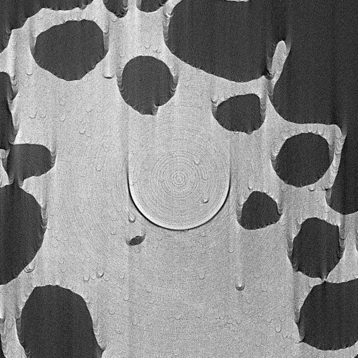
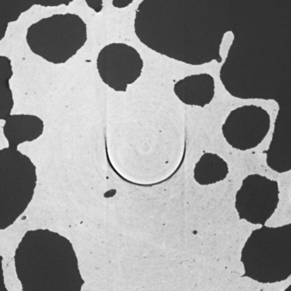

Find center by metric#
Description
The optimal centre of rotation is found by minimising a metric of the reconstructed image:
where \(\mathcal{C}\) is the set of candidate centres and \(M\) is an image-quality metric.
The choice of metric is important because different metrics respond differently to noise, background, contrast, and reconstruction artefacts. It is therefore useful to compare several metrics rather than relying on a single measure.
Where and how to use it:
Use it when the centre of rotation is unknown and needs to be found automatically.
This method can be applied to any data, however the main benefit of this method is when the data is incomplete, i.e., limited angle/missing wedge data.
Note
For parallel-beam tomography, projections separated by approximately 180 degrees contain complementary information. With a correctly determined COR, the projections should exhibit the expected geometrical relationship. Other methods, such as, httomolibgpu.recon.rotation.find_center_vo and httomolibgpu.recon.rotation.find_center_pc, rely on that assumption. So it is advisable to use other methods first, if the data is complete.
What are the adjustable parameters:
There are quite a lot of parameters that can be adjusted to improve the performance of this method. The most important ones are:
metric_typethe choice of metrics to be computed on the reconstructed image. Choose from:'entropy'- Shannon entropy measures the information content or complexity of an image intensity distribution. For a discrete intensity distribution with probabilities \(p_i\), the entropy is \(H = -\sum_i p_i \log_2(p_i)\). A higher entropy indicates a broader or more complex intensity distribution. For an image, the intensity distribution can be estimated using a histogram This metric is sensitive to noise and background, but less sensitive to contrast and reconstruction artefacts. Normally a second best choice after'tv'metric.'tv'- the total variation (the sum of the magnitude of the image gradient) of the reconstructed image. \(|\nabla I| = \sqrt{\left(\frac{\partial I}{\partial x}\right)^2 + \left(\frac{\partial I}{\partial y}\right)^2}\). The'tv'metric is the sum of gradient’s magnitude: \(M_\mathrm{grad} = \sum{(|\nabla I|)}\). Default choice and of the most robust metrics.'sharpness'- the variance of of the Laplacian. The metric is defined as \(M_\mathrm{Lap} = \operatorname{Var}(\nabla^2 I)\), where \(I\) is the reconstructed image. Very sensitive to high-frequency noise.
Note
We found that smoothing the image before computing any of the metrics with 'gaussian_filter_sigma' can improve the performance of the correct CoR estimation significantly. Usually the range between 1 and 3 is a good choice for the 'gaussian_filter_sigma' parameter (see images below).
reconstruction_methodis set to'LPRec3d_tomobar'by default, however the iterative methods such as'SIRT3d_tomobar','CGLS3d_tomobar'are also available. In some cases (especially limited angle data) the iterative methods can provide better results than the default direct methods. Set'gaussian_filter_sigma' = None'if iterative methods are enabled.cor_initialisation_valueis the initial guess of the centre of rotation. The search for the optimal CoR will be performed in the range[cor_initialisation_value - cor_search_range, cor_initialisation_value + cor_search_range]. The default value is set toNone, which means that the initialisation value will be set to the middle of the detector.squared_mask_x_y_sizeis a very important parameter as it defines the squared mask that is applied to the reconstructed image BEFORE computing the metric. The mask can be placed in any position on the reconstructed image. Very frequently, the optimal location of the mask leads to optimal performance of the estimation. However, placing the mask on the ring/streak artifacts or at the edge of the reconstruction leads to incorrect results.The mask is defined as a
listwith 3 values[X, Y, size]. The positive offsetsX, Yplace the mask with respect to the left top corner of the reconstructed image and the third parameter is the size of the cropped image in percents with respect to the whole reconstructed image.Example:
squared_mask_x_y_size = [10, 20, 50]will apply a mask that is 10 pixels away from the left top corner in the horizontal direction and 20 pixels away in the vertical direction, the mask will be 50% in size of the reconstructed image size.The default value when
squared_mask_x_y_size = Noneis the mask in the center of the reconstructed image (not always the best position as many ring artifacts are present) with a size of 50% of the reconstructed image size.save_recon_tiff- this feature is useful for debugging. When set to a valid path, the reconstructed image together with the mask after smoothing are saved in to a specified folder. This allows for visual inspection of the reconstruction and mask placement.
Practical example:
In this example we demonstrate how the choice of smoothing can affect the performance of the CoR estimation.
 Fig. 42 |
 Fig. 43 |